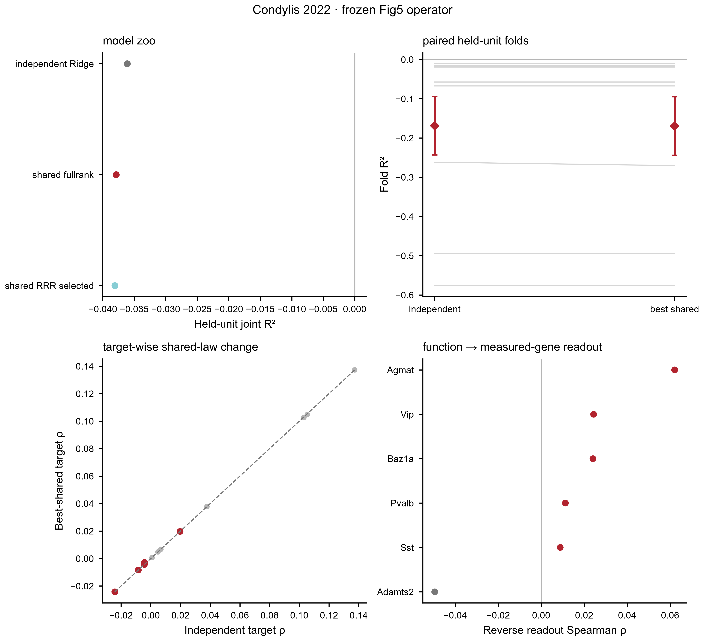
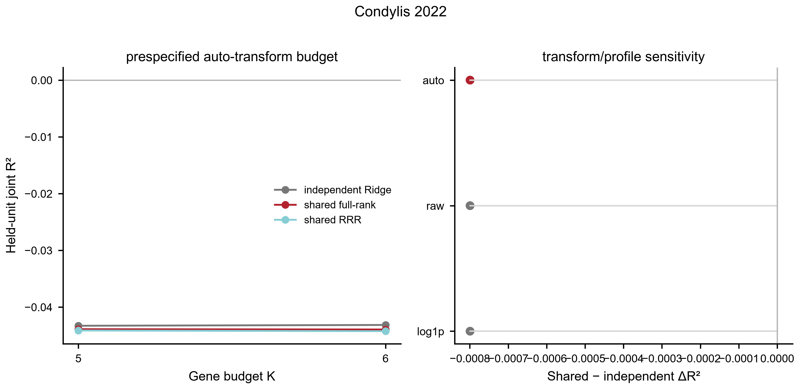

This page exposes what can actually be run and defended: stage coverage, key metrics, held-unit/null contract, explicit stop rules and downloadable authority rows.
7/7 stages standardized or explicitly gated.
21 key metrics extracted into this page.
5 authority subsets downloadable.
Evidence role: VALID_NULL_BOUNDARY
Current authority: 9 held mice; genes/type carry similar categorical marker information; relation index 0.0245, q=0.913 retained as valid null
Boundary/stop rule: nan
Evidence role: SUPPORT
Current authority: SSp-bfd exact reference: 6/6 overlap; GOOD; hidden-gene recovery rho=0.221, p=0.0476; stability=0.836
Boundary/stop rule: nan
Evidence role: BOUNDARY
Current authority: K5 fixed-budget delta Spearman about -0.00008, wins 2/9, q=0.752; full 6-marker panel correctly non-inferential
Boundary/stop rule: nan
Evidence role: SATURATION_BOUNDARY
Current authority: state completion is saturated: best delta R2=+0.0013; function-only R2=0.866
Boundary/stop rule: Molecular markers add almost no unique information once other task/passive states are observed.
Evidence role: BOUNDARY
Current authority: shared operator R2=-0.0500, Spearman=-0.2181, AUROC=0.3604; no absolute operator support
Boundary/stop rule: Categorical 6-marker identity is insufficient for held-mouse multivariate response law.
Evidence role: PANEL_SIZE_BOUNDARY
Current authority: foundation blocked because only 6 genes resolve to frozen tokens (<16)
Boundary/stop rule: Do not lower the threshold to force a foundation result.
Evidence role: BOUNDARY
Current authority: PerturbAtlas-compatible 3-gene operator failed readiness: R2=-0.0363, Spearman=-0.2635, AUROC=0.3294, fold-R2-positive=0
Boundary/stop rule: Tool correctly stops before virtual perturbation nomination.

Frozen model contract: independent Ridge versus shared full-rank and response-space RRR under grouped biological-unit outer CV. Panel B keeps folds paired without duplicating individual points; panel C exposes target-wise heterogeneity; panel D tests reverse function→measured-gene readability.
model summary ·
fold metrics ·
target metrics ·
reverse-gene summary ·
editable SVG

Inference: grouped held-biological-unit outer CV. The auto_K6 full measured-gene contract is primary. Budget, raw/log1p and biological-profile sweeps are sensitivity analyses and are not promoted over the frozen primary contract by choosing the best-looking value.
Exploratory sensitivity maximum: auto_K5 / shared_fullrank, R²=-0.0439, ΔR²=-0.0006.
all sweep rows ·
primary fold metrics ·
editable SVG ·
PDF
Final acceptance for a stage is stricter than showing a result: input contract → QC → held-unit split → comparator/null → full metrics → biological-unit consistency → figure/source-data → stop decision.